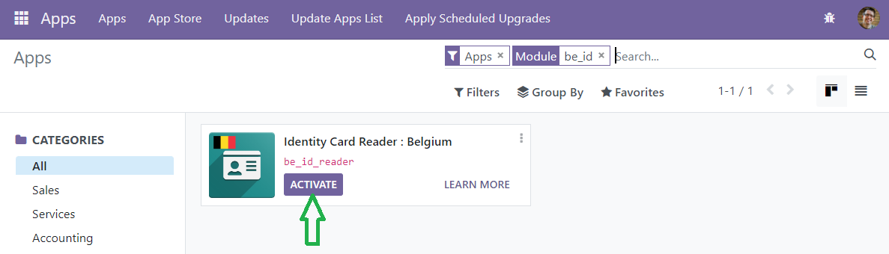
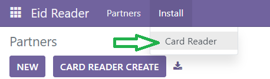
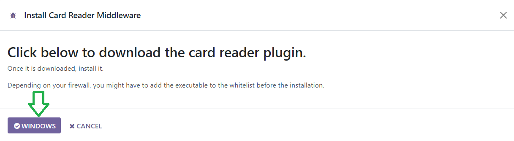
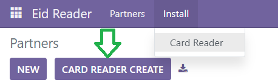
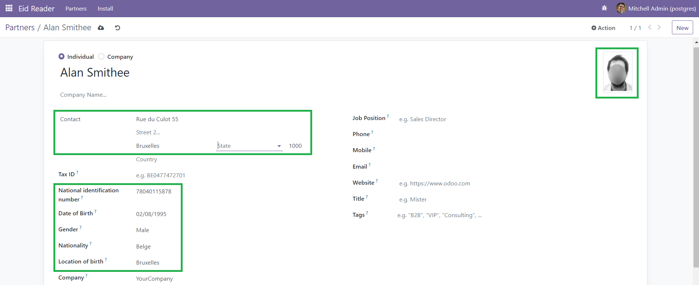

Identity Card Reader for Belgium
This module allows you to import data from a Belgian identity card using a card reader running on a Windows client into Odoo.
This module takes care for you of the reading of the smart card data using PKCS11 standard (including the picture) and the creation of a new Odoo Partner (res.partner).
Follow the steps below to set up and use the module from the client perspective.
Step 0: Install the Odoo module

Step 1: Install Middleware
To connect the identity card reader holding an identity card to your Windows computer, you need to install the middleware provided by the Belgian government. Download the middleware directly from the Odoo instace.


If you encounter any issues during installation, you may need to add an exception to your firewall settings.
Step 1.1: Configure Firewall
If your firewall is blocking the installation or operation of the middleware, follow these steps to add an exception:
- Open the Control Panel and go to System and Security.
- Click on Windows Defender Firewall.
- Select Allow an app or feature through Windows Defender Firewall.
- Click on Change settings and then Allow another app....
- Browse to the location of the middleware executable "eid_reader_installer.exe" file and add it to the list of allowed apps.
If you are using an extra malware analyser, you might also need to add a firewall exception to it.
Step 2: Use the Odoo Module
Once the middleware is installed and configured, you can the Odoo module to import data from the identity card reader. The data that will be imported includes:
- Address
- Gender
- Date of Birth
- Place of Birth
- Nationality
- National Identification Number
To import the data, follow these steps:
- Open the Odoo application and navigate to the Eid Reader module.
- Connect the identity card reader to your computer.
- Click on the Card Reader Create button in the module interface.

- You will be redirected either to the newly created partner, or the existing partner (based on the nationnal registration number) updated.

Troubleshooting
If you encounter any issues, ensure that:
- The middleware is properly installed and running.
- The identity card reader is connected to your computer.
- Your firewall settings are not blocking the middleware.
Pro Tips
You are dealing here with sensitive data:
- When using HTTP, data is sent between the client (middleware) and the server (Odoo instance) in plain text. This means anyone intercepting the data (e.g., through a man-in-the-middle attack) can read the ID card information. Make sure to use the best security practices (HTTPS, TLS, VPN, ...) to ensure data privacy.
- The collection and use of the National Registration Number (NRN) in Belgium is strictly regulated by law to protect individuals' privacy and personal data. The use and collection of the NRN are governed by the Law of August 8, 1983 on the National Register of Natural Persons and its subsequent amendments.
We hope this module will help you ;)